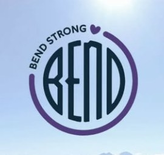

Every child who was in the building that day. Support that follows them as they grow up.
On October 15, 2026, our children carried a day no child should ever have to. We are Silver Rail parents, and we built this fund to stand beside every child who was in that building — not just today, but as they grow. What they need to feel like kids again, now. Care and resources when things feel heavy. A fund that's still there when they're older. Register once, no expiration, and 100% to our kids' healing, joy, and future.
There was a gap. So we filled it ourselves.
Hundreds of our kids heard it, hid from it, and were walked out of that building. They're going to carry that for the rest of their lives. And until now, there was nothing that supported their needs directly — not for this weekend, and not for the years ahead.
This fund started when Silver Rail parents tried to arrange a field trip for all Silver Rail kids to a local pumpkin patch this fall — children who so desperately want to be kids again and play with their classmates. We weren't asking for a donation; we wanted to pay a local farm. We learned there was no fund that could do that. So we built one.
A fund tied to a school ends the day a child leaves it. This fund supports the child as they grow up. The fifth grader who moves on in June, the family that can't walk back through those doors and ends up switching schools or homeschooling, the kid who moves across town — every one of them is still in, through middle school, high school, and college.
Until Silver Rail reopens, our kids are home, apart from their classmates, and what they need most is each other. The weeks after they return to school will be some of the hardest. So will the day another school shooting is on the news. Grief isn't linear. Our kids deserved better, and your support helps them get what they need, when they need it.

If a child was in that building on October 15, they are included. A parent registers once, shows one ordinary piece of school paperwork, and that's done for good. From then on, parents simply let us know what will help their child heal, play, or grow — and we handle the cost directly.
Gentle, child-led play restores what trauma takes.
Trauma disrupts a child's fundamental sense of safety, but gentle, child-led play begins to restore it. When children experience terrifying events, words are often not enough — or simply unavailable. Healing happens in quiet, unpressured moments where kids can regain control, express what they cannot yet say out loud, and safely reconnect with simple joy.
This immediate, trauma-informed play is what surviving children need most right now. Yet it falls into a gap: state crime victims' funds reimburse direct medical bills and formal therapy, and other resources were built for other needs. Nothing existed to give a child immediate, flexible support to gather quietly with two or three classmates, play at home, or find sensory relief. So Silver Rail parents built it.
That is why our community has stepped up to fill this gap directly.
Trauma-informed play, in action
Local businesses are already covering these moments in full. Midtown Yacht Club is sponsoring a quiet pumpkin patch outing before Halloween so kids can connect in an unpressured setting. On Friday, October 30 (now full) and Wednesday, November 4, Deschutes Brewery and Whimsy with Purpose are donating space, food, and staff for a Halloween pizza day in downtown Bend for Silver Rail kids and their parents.
Long-term healing and support
The fund is built to endure. Every child remains eligible until their 25th birthday, because trauma does not follow a neat timeline. Grief and fear often resurface years later — at a first sleepover, the start of middle school, or a hard night in college. When they do, this fund is still here.


What we'll do for them, in order.
Everything this fund pays for is recovery support for a child who was there that day. Trauma disrupts a child's sense of safety, and gentle, child-led play is how it begins to come back: in quiet, unpressured moments where a kid regains control, expresses what they can't yet say out loud, and reconnects with simple joy. Counseling is recovery. So is a trampoline gym, a pottery wheel, a day with classmates. We don't rank them.
We believe no family should ever have to prove their trauma to receive help. If your child was enrolled at Silver Rail on October 15, this fund was created to support them. Register once — we confirm enrollment with one ordinary piece of school paperwork, which we look at and never keep — and from then on, parents tell us what their child needs, from a season of soccer to specialized therapy, and we cover the bill.
What they need right now
Parents know what their own child needs right now — a day painting ceramics, getting the wiggles out at the trampoline gym, a swim pass, a movie with classmates. For a child who lived through October 15, play is recovery: words are often not enough, or not available yet, and play is where the hard things get worked out. No other fund was built to pay for that. This one is.
Resources as needed
When other support ends, we're still here — funding therapy, activities, and ways of keeping these kids together that kids actually want, months and years after everyone else has moved on. Our kids deserve the chance to be kids again.
Still here when they're older
The hard days don't end in elementary school. This fund stays with each child until their 25th birthday — through middle school, high school, and the first years of adulthood, wherever life has taken them by then. As the fund grows, the board intends to explore longer-term support for these kids as they reach adulthood, and will say so here if and when it's funded.
Our first sponsor.

Midtown Yacht Club
Midtown Yacht Club has been raising money for Silver Rail families and kids since the first days, and has pledged to pay for our very first activity: a pumpkin patch outing for Silver Rail kids. The first thing this fund does for our children happens because of them.
midtownyachtclub.com — go say thank you with a beer.
Sponsor a Silver Rail kid.
We're not asking you to give anything away. We pay you — at your group rate if you offer one, your regular price if you don't. Your customers add a few dollars at the register — "sponsor a Silver Rail kid" — and that's what pays for whatever a Silver Rail child needs from you — a class, a ticket, a day. One fundraiser night becomes something that lasts.
You get paid
Offer us a group rate if you can. Either way, every pass, ticket, and class is paid for.
We handle the kids
Distribution, eligibility, and logistics are ours. You never need a child's name.
Your customers do the giving
A sign and a line on the receipt. We supply both.
A sign for your window, a line on your receipt.
Partner businesses get a printed window badge, a register card, and a thank-you on this site. Your customers see where their few dollars went. We handle everything else.
Become a sponsor businessLook us up. Please.
This fund is run by Silver Rail parents — nobody else. Meet the board. None of us are paid. Individual requests are decided by an independent three-person committee with no Silver Rail parents on it, and our own kids can't receive individual requests while we serve, or for a year after. Every payment is signed by two officers, neither of them the child's parent. And every month we publish exactly what came in and where it went.
Businesses are paid by default — donating is welcome, never expected. Families register once; enrollment is confirmed privately and no paperwork is kept. No child's name or image is used without a parent's permission.
- Oregon nonprofit — filedArticles of Incorporation for Silver Rail Children's Fund filed with the Oregon Secretary of State on October 23, 2026.
- Federal Tax ID — issuedThe IRS assigned Tax ID 43-2607169 on October 23, 2026. Read the IRS letter (PDF).
- 501(c)(3) — in progressFederal tax-exempt application is being prepared. Donations are not tax-deductible until the IRS approves it. If approved, exemption applies retroactively to our incorporation date, so gifts made now would become deductible. Every donor gets a receipt either way.
- Oregon DOJ charity registration — in progressRegistration with the Charitable Activities Section is being prepared.
The record
| Legal name | Silver Rail Children's Fund |
| Entity type | Oregon Domestic Nonprofit Corporation, Public Benefit |
| Oregon Registry No. | 264524597 |
| Filed | October 23, 2026 |
| Tax ID | 43-2607169 |
| Federal status | 501(c)(3) application pending |
| First program | Silver Rail Kids Fun Fund |
| Monthly ledger | Published here beginning with the first full month of operations |
What's happened so far
- Oct 22 — Silver Rail Kids Fun Fund launched on GoFundMe
- Oct 23 — Silver Rail Children's Fund incorporated in Oregon; Tax ID issued
- Oct 25 — KTVZ: Silver Rail parents launch nonprofit offering support for students who survived tragedy
- Oct 28–31 (open) — Pumpkin Patch Days: DD Ranch Wed–Sat (paid by Midtown Yacht Club) and Smith Rock Ranch Thu (in-kind), 1–6 pm
- Oct 30 (full — waitlist) & Nov 4 (open) — Pizza Day at Deschutes Brewery, an in-kind donation from Deschutes Brewery and Whimsy with Purpose
- Next — bylaws signed and posted; bank account; DOJ registration

Bend is standing with our kids.
Posts from people who have shown up for Silver Rail. Use #silverrailchildrensfund so we can find and share yours.
Stand with our children.
Not a fund for the school. A fund for the kids who were in it. Every dollar goes to a child, never to a building — and it follows them wherever they go, as funds allow, for as long as they need it. Every dollar in and out is published monthly.
Give nowHow to help Silver Rail kids — and how to get help.
- How can I help Silver Rail Elementary families?
- Give to the Silver Rail Kids Fun Fund on GoFundMe, or add a few dollars at the register at any Bend business showing a "Sponsor a Silver Rail kid" sign. 100% goes to the children who were in the building on October 15.
- Is this connected to the school, or to any other fund?
- No. Silver Rail Children's Fund is an independent Oregon nonprofit run by Silver Rail parents. It isn't part of the school or any other organization. It supports each child directly, right now while school is closed, and it stays with the child wherever they go next. Other funds exist, and families and donors are welcome to support any or all of them.
- Which children are eligible?
- Every child who was enrolled at or present at Silver Rail Elementary on October 15, 2026, plus their siblings at home and the children of adults who were in the building that day. A parent registers once and shows us one ordinary piece of school paperwork (a ParentVUE screenshot or report card is plenty); we look, we don't keep it, and the child is in for good. From then on, parents tell us what their child needs; we pay the business or provider directly.
- What does "100% to the kids" actually mean?
- Every dollar donated is spent on Silver Rail children. The fund keeps three separate bank accounts: a General Fund that every donation goes into and every child's support comes out of; an Events account for sponsors paying for a specific activity; and a small Administrative account funded only by the board members themselves (and anyone who specifically asks to cover operating costs), which pays for things like this website and the email account. Nothing ever moves from the General Fund to admin, and none of us are paid. GoFundMe and card processors take their standard transaction fees before money reaches any fund, ours included. The monthly ledger shows what came in and exactly where it went.
- Who decides whether a request gets paid?
- Not a parent. Individual requests are approved by an independent three-person Disbursement Committee — no Silver Rail parents, no board members, no relatives of either — that the board appoints and cannot overrule. The board sets the budget and the rules; the committee decides the payments. Every payment is then signed by two officers, neither of them the child's parent. Group activities like the pumpkin patch are open to every registered family without any request at all. Support is provided as funds allow. The board publishes any per-child allowance in advance, and the balance is public every month.
- Does any money ever go to a parent?
- No. We pay the counselor, the business, or the provider directly for something a child receives. We don't make cash grants, we don't reimburse parents, and we don't pay household bills. The one exception is the cost of an adult who has to be there for a child to take part safely — a parent's ticket at the pumpkin patch, for example.
- Can board members' kids get help from the fund?
- Not individual requests — not while their parent is on the board, and not for a year after. They can join group programs open to all registered kids, decided by the independent committee, and those payments are a separate line in the monthly ledger.
- What is the fund's legal and professional support?
- Silver Rail Children's Fund is an Oregon public benefit nonprofit corporation with bylaws, a conflict-of-interest policy, a volunteer parent board, and a 501(c)(3) application in progress. We are working with a nonprofit attorney on our governance and filings. Our organizing documents will be posted on this page once signed.
- Is my donation tax-deductible?
- Not yet. We're an Oregon public benefit nonprofit (Registry No. 264524597, Tax ID 43-2607169) with a 501(c)(3) application in progress. If the IRS approves it, exemption is retroactive to incorporation, so gifts made now would become deductible. Every donor gets a receipt either way, and we'll announce approval here the day it happens.
- I own a business in Bend. How do I take part?
- Print the sign, put it in your window or at the register, and tell us. Customers add a few dollars at checkout; we pay you for what Silver Rail kids use. You're paid by default. If you'd rather donate or discount, we'll take you up on it gratefully — but it's never expected.
- I'm a Silver Rail parent. How do I ask for support?
- Register your child on the For Parents page, then tell us what would help them — a class, a pass, a trip, counseling. We'll confirm enrollment once, privately, and never ask again. That page also spells out exactly what we promise and what we keep.
Tell us what you need. Or what you can give.
Parents: tell us what would help your child. Businesses: tell us how you'd like to be part of this. Press and foundations: we'll do our best to answer as quickly as we can.
Nothing you write here is shared, and no child's name goes anywhere without your say-so.
This goes straight into the fund's own private Google Workspace, opened only by the Silver Rail parents who run it. Please give us one to three days to reply — we're still finding our footing, like you. If the form doesn't load, open it in a new tab or email hello@silverrailchildrensfund.org.